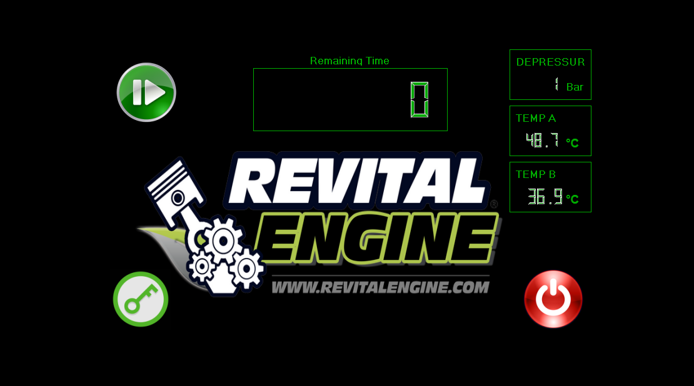
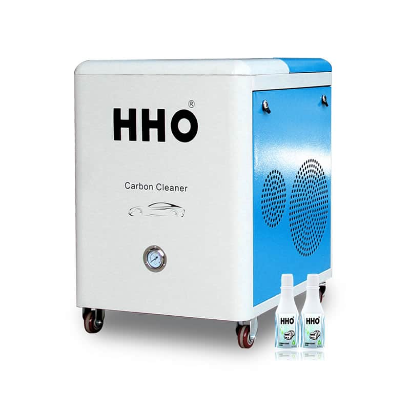
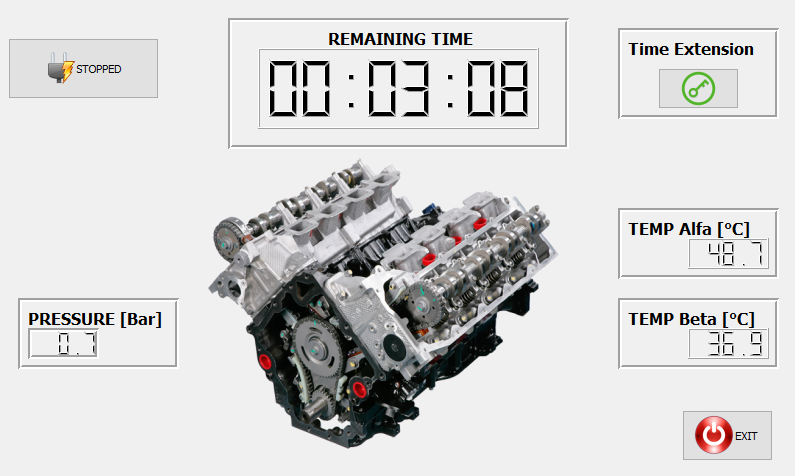
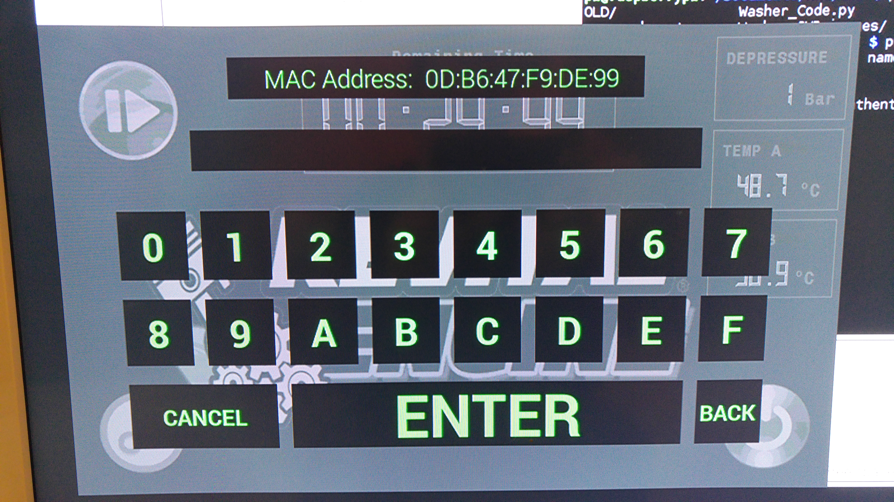
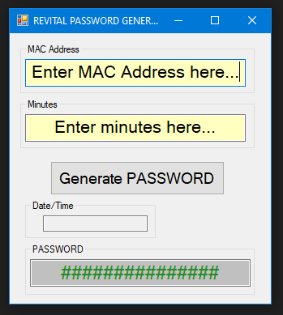
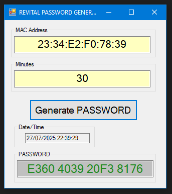
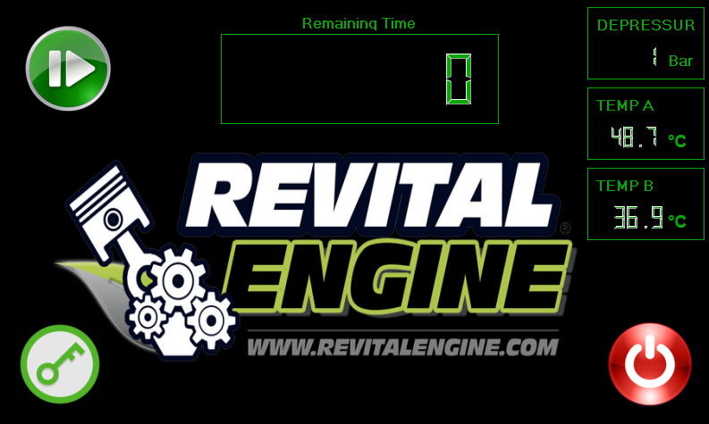

The Application is designed authorize the utilization of the device, granting a tool usage time according to a activation passwords.
Device perform data acquisition and display of system temperatures, pressures, and remaining usage time.
details:
- UI and logic design according to customer requirements, and its implementation on commercial HW.
- Anti-tampering feature: Functionalities disable when the device case is open.
- Extra time accreditation via password generated by an external Desktop sw tool provided to the system manager.
- Password generator desktop application developed in VB.NET language.





